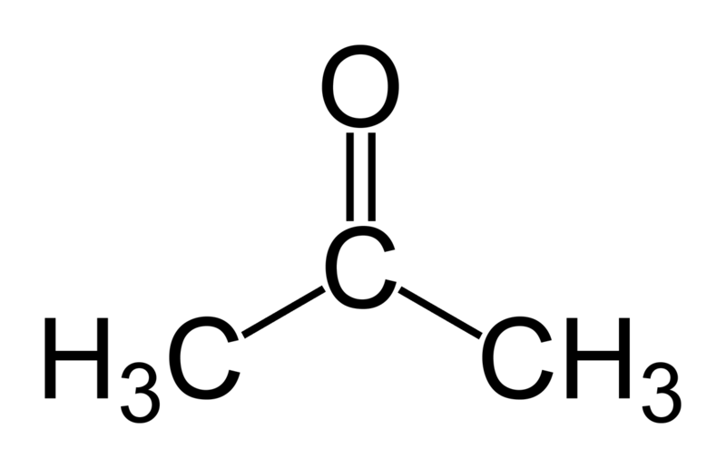

Free energy techniques
In case of issues, please contact duve@fias.uni-frankfurt.de, riccardo.alessandri@kuleuven.be, or thallmair@fias.uni-frankfurt.de.
Summary
Introduction
The aim of this set of practicals is to familiarize with free energy techniques using the Gromacs program suite and the coarse-grained (CG) force field Martini. You will learn how the necessary input files are structured, how to set up and run the simulations, and finally how to extract the required information from the simulations.
In particular, we will calculate the partition coefficient of a CG bead in water and hexadecane using free sampling, umbrella sampling and thermodynamic integration. These methodologies have a number of practical applications, e.g. the parametrization of small molecules, to study free energies of solvation/hydration, free energies of binding of a small molecule (e.g. a drug molecule) to a receptor (e.g. a protein), and the free energy cost of point mutations.
All files needed for this part of the tutorial can be found in the FreeEnergyTechniques folder in FreeEnergyTechniques.zip. Each part of this tutorial has its own directory which itself contains a folder called files_DIY. There you can find the necessary files to follow the tutorial. For the second and the third part (umbrella sampling and thermodynamic integration) we also provide a worked version in the folder files_worked.
Open a terminal, download the .zip file, and unpack it:
wget https://cgmartini-library.s3.ca-central-1.amazonaws.com/0_Tutorials/legacy_material/martini2/FreeEnergyTechniques.zip
unzip FreeEnergyTechniques.zipFree sampling
The first method for determining the logarithm of the partition coefficient P of a molecule between two different solvents (e.g. hexadecane and water) makes use of an unbiased CG-MD simulation. The \(log(P_{water-hexadecane})\) can be calculated by comparing the occupancy of your molecule of interest in the two phases. This yields the ratio of the time the molecule spends in each phase – the partition coefficient P – which can be used to calculate the free energy difference between the phases by making use of the statistical mechanics definition of Gibbs free energy \(\Delta G\).
\[ \Delta G = -RTln(P) \]
\(\Delta G\): free energy
\(R\): gas constant
\(T\): absolute temperature
\(P\): partition coefficient = occupancy hexadecane/occupancy water
In this tutorial we will try to find the \(log(P_{water-hexadecane})\) for acetone. In Martini 3 refular beads make use of a 4-to-1 mapping of non-hydrogen atoms, therefore a single regular bead is sufficient to represent acetone. Thus, the CG model is rather simple as it does not contain any bonded interactions. We only need to select the right bead type to represent the non-bonded interactions.
In Martini 3, acetone is best represented by an N5 bead, reflecting its intermediate polarity. Additionally, since the carbonyl group in acetone can act as a hydrogen bond acceptor, we assign it the ‘a’ label. The final bead type for acetone is thus N5a.

All files needed for this part of the tutorial can be found in the 1_FreeSampling/files_DIY/ folder, in the .zip file you downloaded. Inside the 1.0.parameters you will find the following files used for the simulation:
bead_template.itp: the topology file for the bead to be partitioned
martini_em.mdp: the input settings for energy minimization
martini_eq.mdp: the input settings for equilibration
martini_run.mdp: the input settings for the production run
martini_v3.0.0_solvents_v1.itp: forcefield description of solvents, including water and hexadecane
martini_v3.0.0.itp: general forcefield description
Enter the 1.0.parameters folder and modify the bead_template.itp file. Change the bead type to N5a for acetone. Do not forget to save after you have made your changes.
cd 1_FreeSampling/files_DIY/1.0.parameters
vim bead_template.itpNow we are ready to prepare our simulation. Enter the 1.1.simulation directory.
cd ../1.1.simulationThere you will find hexadecane_w.gro which defines the initial state of our system. In this case, the simulation box is equally divided between water and hexadecane. Additionally, 21 acetone molecules are places randomly in the box. This allows the beads to explore both solvent phases in an unbiased manner.
We can now run the minimization of the system using:
gmx grompp -f ../1.0.parameters/martini_em.mdp -c hexadecane_w.gro -p topol.top -o 1-min.tpr
gmx mdrun -deffnm 1-min -v -rdd 2.0 >> mdrun.log 2>&1After the simulation has finished successfully, we can perform some equilibration steps. Note that we need to supress a gromacs warning due to the use of the Berendsen thermostat using -maxwarn 1.
gmx grompp -f ../1.0.parameters/martini_eq.mdp -c 1-min.gro -p topol.top -o 2-eq.tpr -maxwarn 1
gmx mdrun -deffnm 2-eq -v -rdd 2.0 >> mdrun.log 2>&1And finally we can run the production:
gmx grompp -f ../1.0.parameters/martini_run.mdp -c 2-eq.gro -p topol.top -o 3-run.tpr
gmx mdrun -deffnm 3-run -v -rdd 2.0 >> mdrun.log 2>&1After that the simulation has finished, you can examine the distribution of the acetone beads qualitatively, using a visualization software for example VMD. Additionally, we perform a quantitative analysis. Create an analysis folder and perform a density analysis along the z dimension. To do so we will use gmx density:
mkdir analysis
cd analysis
gmx density -f ../3-run.xtc -s ../3-run.tpr -center -symm -ng 3 -o density.xvgYou will be prompted to select the group for centering, selecting either the group representing W or HD should do. Then we would like to obtain the density for the W, HD and B seperately. Therefore select each one once (by typing the according number) followed by pressing return. After you have specified three groups the analysis will be performed. This should be finished within a matter of seconds. After the analysis has finished you can open the density.xvg file with xmgrace – a graphing program.
xmgrace -nxy density.xvgThough all the information is there, it is easier to look at after normalization. To do so you need to click at Data/Transformations/Evaluate Expression… in the main menu. In the popped up menu select all three sets on the left and all three sets on the right by dragging with your mouse. Now all sets on the left and right should have a black background. Next type y = y/max(y) in the Formula field and click Accept at the bottom center in the menu. All lines are now between 0 and 1, however our y-scale is still way too bloated. To quickly fix this you need to click the AS (auto scale) button in the general menu on the left (the second button on the right). Now find the y-value for B line in both the bulk W and HD.
You can calculate the \(P_{hexadecane-water}\) for acetone by dividing the HD-bulk population by the W-bulk population. Another option is to divide the mass density of acetone in the HD phase by the mass density in the water phase. To aquire the \(log(P_{hexadecane-water})\), you the have to calculate the logarithm. By plugging in your acquired ratio for P in equation 1, you can obtain the free energy difference between the two states. Compare your value to the value for a N5a bead published in Table 17 of the SI of the Martini 3 paper [1].
Umbrella sampling
Frequently, unbiased MD simulations cannot be the appropriate technique to study systems involving rare events. Even in simple problems, as log(P) calculations, the sampling can be difficult. For example, solutes too hydrophobic could take a long time to visit the water phase. Increasing the solute concentration as a way to increase the frequency to happen these rare events has a limit: at some point you could induce solute aggregation or even changes in the solvent properties of the phases. If this is the case, special biased MD techniques can be used to improve the sampling. Here, we introduce the usage of one of the most traditional free energy methods, called Umbrella Sampling (US). In the US approach, the potential function – i.e. the interactions of your system – is modified in a way to equally sample favorable and unfavorable states along a reaction coordinate (RC). The RC is defined as the path between two well-defined states. We will apply the US approach to the same problem described in the previous part of the tutorial: hexadecane-water log(P) calculations of acetone (represented with a N5a bead in the MARTINI 3 coarse-grained force field). The main practical steps to obtain log(P) via US simulations are:
Generate a series of initial configurations along the RC. In a water-hexadecane biphasic system, the most obvious RC is the position of your solute in the simulation box, from the bulk of one solvent to the bulk of the other one.
Run US simulations on each configuration, restraining the solute in the center of the window via bias potentials. Often, harmonic potentials are used due to their simplicity.
Use the weighted histogram analysis method (WHAM) to extract the potential of mean force (PMF) and calculate \(\Delta G_{HD-W}\) and \(log(P_{HD-W})\).
More details of the theory behind the US technique can be found in reference [2]. Hereafter, we describe step by step how to perform the US simulation. Now, let us start the hands-on section.
Generating the windows along the RC
To perform US simulations, we must generate a series of configurations along the RC. These configurations will serve as the starting points for the US windows, which can be performed as parallel independent simulations. Figure 2 illustrates the principles: The top image illustrates the RC of the N5a bead in the water-hexadecane biphasic mixture. We can start from water to hexadecane or vice versa, using the z-axis of the box as RC (x-axis in the image). The middle image corresponds to the independent simulations conducted within each sampling window along the RC, with the N5a bead being restrained in that window by an umbrella biasing potential. The bottom images shows the ideal result as a histogram of configurations, with neighboring windows overlapping such that a continuous free energy function can later be derived from these simulations.

To generate the initial configurations for each window, we need to perform a sequence of pulling, energy minimization and equilibration simulations. This protocol has been established based on trial-and-error to obtain a reasonable distribution of configurations. In other systems, it may be necessary to save configurations more often or even to apply a different minimization/equilibration procedure. The idea is to capture enough equilibrated configurations along the RC to obtain a regular spacing of the US windows (in terms of the N5a distance position on the z-axis from hexadecane to water).
Enter in the initial configuration folder and look at the files inside.
cd 2_UmbrellaSampling/files_DIY/2.1.initial_configurations/
lsYou will find a bash script (that will be commented on later), a .gro file and also some templates for the .mdp files. Theses files will be used to generate the initial conditions for each window of your RC. The start.gro file contains a CG model of hexadecane-water simulation box and 1 N5a bead. You may want to take a look in the system using vmd.
The .mdp files are basically sequential steps of pulling, minimization and equilibration simulations. They were designed to smoothly put the N5a bead in a specific position of your box (the windows along your RC). The position of N5a is defined in the pulling parameters of the .mdp files. You can take a look at them (all parameters staring with pull) in one of the .mdp files using vim.
You can find what these parameters control in the GROMACS manual. However, save this task for later, when you have started the production simulations. Now, create the folder for the first window and copy the .mdp files to this folder:
mkdir 0.0/
cp *.mdp 0.0/ Enter the 0.0 folder and modify in each .mdp file the pull-coord1-init parameter by replacing POS1 with 0.0:
cd 0.0/
vim <file>.mdpThen generate the .tpr files and run the pulling, energy minimization and equilibration steps:
gmx grompp -f 1-pull.mdp -c ../start.gro -p ../../2.0.parameters/topol.top -o 1-pull.tpr -maxwarn 1
gmx mdrun -nt 1 -deffnm 1-pull -v &> 1-pullrun.log
gmx grompp -f 2-em1.mdp -c 1-pull.gro -p ../../2.0.parameters/topol.top -o 2-em1.tpr
gmx mdrun -nt 1 -deffnm 2-em1 -v &> 2-em1run.log
gmx grompp -f 3-em2.mdp -c 2-em1.gro -p ../../2.0.parameters/topol.top -o 3-em2.tpr
gmx mdrun -nt 1 -deffnm 3-em2 -v &> 3-em2run.log
gmx grompp -f 4-eq.mdp -c 3-em2.gro -p ../../2.0.parameters/topol.top -o 4-eq.tpr -maxwarn 1
gmx mdrun -nt 1 -deffnm 4-eq -v -px 4-eq_x -pf 4-eq_f &> 4-eqrun.logOnce this is successful, we need to repeat the procedure for each other window, from 0.1 to 3.9, with spacing of 0.1 nanometer. As you already know how the whole procedure works, you can use a bash script to automatically generate all other 39 windows. Come back to the parent folder and then run the script.
cd ../
bash initial_configurations.shRunning the production simulations for each window
Now, we are ready to run the US simulations. Enter in the production folder and look at the files inside. As in the previous step, you should now generate folders for each window and perform longer production simulations. We separate this task with two scripts, to run two sets of simulations in parallel.(The & sign is to cast the process to the background. nohup makes sure that even when you close the current terminal, the process remains active.)
cd ../2.2.production/
nohup ./umbrella1.sh &
nohup ./umbrella2.sh &This step should take a maximum of 30 minutes. In the mean time, take a look at the GROMACS manual to find the meaning of the pulling parameters used in the .mdp files. You can also take a look at the recommended reference about US.
Data analysis
The most common analysis conducted for US simulations is the extraction of the PMF, which will yield the hexadecane-water partition ΔG for the N5a bead. ΔG is simply the difference between the water and hexadecane energy values of the PMF curve. A common method for extracting PMF is the WHAM, included in Gromacs as the wham utility. Its input consists of two files, one lists the names of the production .tpr files of each window, and the other that lists the names of either the pullf.xvg or pullx.xvg files from each window. First, enter the data analysis folder and generate the files containing the list of production .tpr and pullx.xvg files:
cd ../2.3.analysis/
ls -d ../2.2.production/*/md.tpr > tpr-files.dat
ls -d ../2.2.production/*/md_x.xvg > pullx-files.datThen, run the gromacs tool wham:
gmx wham -ix pullx-files.dat -it tpr-files.dat -bsres -bins 200 -temp 300 -unit kJ -b 100 -nBootstrap 100 -zprof0 3.5 -min 0 -max 3.9The WHAM utility will open each of the umbrella.tpr and pullx.xvg files sequentially and run the WHAM analysis on them. Take a look in the meaning of the other input parameters used to run gmx wham using its help option (gmx wham -h). For example, the -unit kJ option indicates that the output will be in [kJ/mol], but you can also get results in [kcal/mol] or [\(k_BT\)]. After running gmx wham, you should end up with a profile.xvg file that looks similar to Figure 3A, except it does not show the error bars. You can open the result using xmgrace.
xmgrace profile.xvgIf you want to see the error bars (and this is recommended!) inspect the file bsResult.xvg. All individual profiles from the bootstrapping are in the file bsProfs.xvg. One of the other outputs of the wham command will be a file called histo.xvg, which contains the histograms of the configurations within the US windows. These histograms will determine whether or not there is sufficient overlap between adjacent windows. For the types of simulations conducted as part of this tutorial, you may obtain something like Figure 3B. The histograms have to show reasonable overlap between the sampled windows.
xmgrace -nxy histo.xvgYou can now calculate the \(log(P_{hexadecane-water})\) of acetone from the free energy difference between hexadecane and water using the following equation: \[ log(P) = -\frac{\Delta G}{ln(10)RT} \].
Thermodynamics integration
The third possibility to calculate the partitioning coefficient is using thermodynamic integration (TI). TI is a method used in molecular simulations to compute free energy differences between two states — such as transferring a molecule from one solvent to another. TI gradually “alchemically transforms” a molecule from an interacting state (real molecule) to a non-interacting one (dummy particle) across a coupling parameter λ, which ranges from 0 to 1: - λ = 0 : fully interacting molecule (normal behavior in solvent) - λ = 1 : non-interacting molecule (essentially disappears from the system)
The thermodynamics integration calculation can be performed in several ways, but we will do it here by integrating the average derivative of the Hamiltonian (read: interaction potential) with respect to the coupling parameter in a piecewise fashion, i.e. calculate the average derivative with respect to the coupling parameter at a set of values of the coupling parameter and integrate it. Fortunately, Gromacs will take care of all these complicated calculations. An important issue to be addressed is the convergence of the final integrated number. The convergence depends on the error in the averages at the different λ points and on the smoothness of the curve, i.e. the number of individual λ points used in the integration. This will require a lot of simulations and therefore a number of results will be provided to you in case you ran out of time.
First one needs to set up the systems at individual λ points. We will set up an individual λ point for solvation of a acetone (N5a bead) in water, and then use a bash script to set up and run simulations pertaining to all λ points in parallel. You will also prepare a set-up for calculating solvation free energy of a N5a bead in hexadecane following the same steps as the set up in water.
All files needed for this part of the tutorial can be found in the 3_ThermodynamicIntegration/files_DIY/ folder, in the .zip file you downloaded. First take a look at the 3.0.parameters folder. There you will find the following files, similar to the previous sections:
bead_template.itp: the topology file for the bead to be partitioned, in this case Acetone (N5a)
martini_em.mdp: the input settings for energy minimization
TI_run.mdp: the input settings for thermodynamic integration (will be explained later)
martini_v3.0.0_solvents_v1.itp: forcefield description of solvents, including water and hexadecane
martini_v3.0.0.itp: general forcefield description
Setting up the solvated system of a N5a bead in water
First we will calculate the solvation energy of acetone in water. In order to perform the simulation, the system and the simulation conditions need to be specified. Change to the directory 3.1.Water and solvate the N5a bead in water using the provided water box and the following command:
cd 3.1.Water
gmx solvate -cp acetone.gro -cs solvent.gro -o solvated.gro -box 5.5 5.5 5.5 -maxsol 1280We then run a minimization of the solvated system:
gmx grompp -p topol.top -c solvated.gro -f ../3.0.parameters/martini_em.mdp -o min -maxwarn 2
gmx mdrun -v -deffnm min >> min.log 2>&1If all is well, you should now have produced a good starting structure for the calculation of derivative of the energy at the single λ point.
Running a perturbation simulation at a particular value of the coupling parameter λ
Create a directory for a single production run, go there and copy the TI_run.mdp file:
mkdir production
cd production
cp ../../3.0.parameters/TI_run.mdp .Open the file TI_run.mdp in an editor. Note the following settings in the free energy parameters section:
First of all, we specify free-energy = yes to ensure calculation of dH/dλ. The value of λ is given by init-lambda and should be different for each lambda point. In the this case replace ‘sedstate’ with 0.
When switching on/off non-bonded interactions, atoms can be quite close to each other, much closer than in fully interacting systems. To avoid large forces or dH/dλ values, soft core potentials are used instead of the LJ potential. Soft core potentials have the property that their value is finite at distance 0. For the MARTINI force field, values of sc-alpha = 0.5 usually perform well.
The parameter sc-power controls the rate at which the coupling varies with λ. With sc-power = 1 the change in interaction is linear in λ, sc-power = 2 specifies quadratic change. The paramter couple-moltype defines the name of the molecule to alchemically transform. Ensure that this is set to ‘ACE’ for acetone in our case.
All is now in place to run a simulation. Therefore, now execute the following commands
gmx grompp -p ../topol.top -c ../min.gro -f TI_run.mdp -o run
gmx mdrun -v -deffnm run >> mdrun.log 2>&1If all is well, you should now be producing data to give you an estimate of the dH/dλ at the λ point. The next task is to compute the change in free energy by integrating the entire dH/dλ curve as a function of λ. Check that sensible data are produced (i.e. numbers, not inf or nan) by looking at the file run.xvg. NOTE that it may take a while before the first data appear in run.xvg.
tail run.xvgRunning all λ points
In order to quickly run all simulations for each value of λ points, we have made a bash script available which performs the steps discussed in the previous section for each λ point. Go to the previous directory and have a look at the script TI. If you are understood the commands, proceed to executing the script:
cd ..
bash TI.shThe script will create directories with relevant values of init_lambda_state inserted to the TI_run.mdp file and will proceed to execute TI calculation for each state. This means that for each value of λ the production simulation will be performed in separate directories. To analyze the data, GROMACS bar module will be used to conduct Bennett acceptance ratio (BAR) method and compute free energy of solvation. The bar module will collect all the .xvg files that were generated (for each value of λ) and produce three output files; bar.xvg, barint.xvg and histogram.xvg. The value of solvation free energy will be printed in final.dat.
Setting up the solvated system of a Na bead in hexadecane
To get the difference in the free energy of solvation, we need to perform the same procedure in hexadecane. The directory 3_ThermodynamicIntegration/files_DIY/3.2.HD contains the required files. Enter that directory and solvate the N5a bead in HD. Note that we need to change the number of solvent molecules, as hexadecane contains four beads opposed to the single bead water model.
cd ../3.2.HD
gmx solvate -cp acetone.gro -cs solvent.gro -o solvated.gro -box 5.5 5.5 5.5 -maxsol 320Again we first run a minimization, followed by production runs for each value of λ using the TI.sh script. The result will be printed to final.dat.
Using the difference between the free energy values of water and hexane we can calculate the \(log(P_{hexadecane-water})\) of acetone, as discussed in the previous section.
Tools and scripts used in this tutorial
GROMACS(http://www.gromacs.org/)
References
[1] Souza, P.C.T., Alessandri, R., Barnoud, J. et al. Martini 3: a general purpose force field for coarse-grained molecular dynamics. Nat Methods 18, 382–388 (2021).
[2] Kästner, J. (2011) Umbrella sampling, WIREs: Comp. Mol. Sci. 1, 932–942.